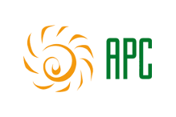
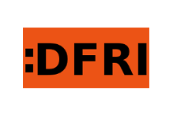
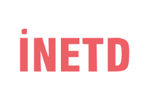
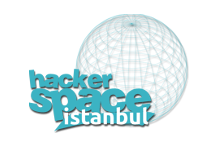

Nedir?
Internet Governance Forum 2014, 2-5 Eylül tarihleri arasında İstanbul’da gerçekleştiriliyor. IGF, dünyanın birçok ülkesinden ilgililerin katılacağı ve yakından takip edeceği önemli bir toplantı olacak. Artık hayatımızın her alanının bir parçası hâline gelen internetin bir anlamda masaya yatırılacağı bu etkinlik, hepimiz için çok önemli.
Biz bu toplantıda, İnternet’in en acil problemlerinin ya hiç konuşulmadığını ya da yeterince konuşulmadığını görüyoruz. Sansür ve ifade özgürlüğü, gözetim ve mahremiyet, aşırı ticarileşme ve süper tekeller, korumacı, yasakçı, muhafazakar yaklaşımlar, başta Türkiye gelmek üzere berbat yönetişim örnekleri, vb. Üstelik bu problemlerin büyük bölümünün bizzat failleri olan devlet ve şirketler bu toplantıda hiç haketmedikleri kadar temsil ediliyorlar. Böyle bir durumda bildiğimiz anlamda interneti savunmak ve bunu savunmak isteyenlerin sesinin daha yüksek çıkmasını sağlamak için bir şeyler yapmamız gerektiğini düşündük.
IGF dolayısı ile ilgili bir çok insan Türkiye'de bulunacak. Bunun, İnternetin özgür, güvenli ve tarafsız bir alan olmasını isteyen insanların bir araya gelmesi, daha geniş zaman geçirmesi, problemleri ve çözüm önerilerini tartışabilmesi için iyi bir fırsat olduğunu düşünüyoruz. Internet Ungovernance Forumu da bu amaçla düzenliyoruz.
Eğer özgür, güvenli ve tarafsız bir internet istiyorsanız ve bunun için mücadele ediyorsanız, sizlerden bu etkinliğe mümkün olduğunca katkı sunmanızı ve destek olmanızı istiyoruz.
Ne zaman?
4 - 5 Eylül 2014
Nerede?
Istanbul Bilgi Üniversitesi, Santral Kampüsü.
Ulaşım için IGF alanından (Lütfi
Kırdar Kongre Merkezi) servis kalkacak.
Ayrıca Bilgi Üniversitesi'nin Shuttle'ları ile de Santal Kampüsü'ne ulaşabilirsiniz.
Shuttle Saatleri ve Kalkış
Yerleri
Nasıl katkı sunarım?
Eğer bir panel ya da workshop yapmak ya da bir konuda panelist olmak istiyorsanız, aşağıdaki konu başlıklarına ve belirtilen süre biçimine uygun olarak bize önerilerinizi iletebilirsiniz.
Konu Başlıkları:
- Gözetim
- Sansür
- Hukuk
- İfade Özgürlüğü ve Alternatif Medya
- Ağ tarafsızlığı
- Yönetişim
- Uluslararası Dayanışma Ağları
- Gençlerin ve Kadınların Katılımı
- Sayısal Uçurum
- Teknik Direniş, Çözüm Yolları
Öneri Biçimleri:
- 10 dakikalık sunum
- 30, 45 veya 90 dakikalık panel veya atölye çalışması
- Eğer farklı bir öneriniz varsa, lütfen bize detaylı şekilde yazın
Bir STK veya topluluk iseniz yada tanıtmak istediğiniz bir projeniz varsa stand açabilirsiniz. Ayrıca organizasyon için gönüllü olabilirsiniz.
Tüm bunlar ve aklınıza gelen diğer konular için aşağıdaki yollar aracılığıyla bizlerle iletişim kurabilirsiniz.
Destekleyenler
- AccessNow
- Alternative Informatics Association
- Article19
- Association for Progressive Communication
- Association for Digital Rights and Freedoms
- Chamber of Electrical Engineers
- European Digital Rights (EDRI)
- Internet Technologies Association
- Istanbul hackerSpace
- Open Rights Group
- Tactical Tech
 Web We Want
Web We Want
Program
Taslak Program.
| 4. Eylül, Perşembe | 5. Eylül, Cuma | |||
|---|---|---|---|---|
| Room/Salon A | Room/Salon B | Room/Salon A | Room/Salon B | |
| 10:00 | Açılış ve Program Sunuşu | |||
| 10:30 | Keynote Yaman Akdeniz | |||
| 11:15 | Break/Ara (15 min/dk) | Internet Governance Map Launch | ||
| 11:30 | Türkiye'de İnternet ve İnsan Hakları (Mod: Aslı TelliAydemir) Mustafa Akgül, Inetd Kerem Altıparmak, Ankara University, Law Faculty Ben Wagner Agnes Callamard |
Cryptoparty (IstanbulHackerspace, Kemgözlereşiş, Article19) |
Solidarity against dispossession in the city on the internet (mod: Burak Arikan) Elif Ince Yasar Adanali Joana Varon Niels ten Oever Aslı Telli Aydemir |
Bitmask Workshop (Harry Halpin) |
| 13:00 | Yemek Arası | |||
| 14:00 | Unconference Please send your AletEtme Kampanyası Linus Nordberg Melda Akbaş |
Unconference |
Yurttaş Gazeteciliği ve Alternatif Medya (Mod: Isik Mater) Elif Akgül - Bianet Tuba Güneş- Çapul TV Ötekilerin Post 140 Journos Gillo Cutrupi, Tactical Tech dokuz8 |
Cryptoparty(IstanbulHackerspace, Kemgözlereşiş, Article19) |
| 15:45 | Çay Kahve Arası (15 dk) | |||
| 16:00 | Gözetim & Ağ Tarafsızlığı (Mod:Orkut Murat Yılmaz) Katitza Rodriguez, EFF Amelia Andersdotter, Pirate Party, Sweden Melih Kırlıdoğ - AIA Chris Soghoian, ACLU Joe McNamee, EDRI |
Power to the People! Revolutionary Philosophical Implications ofInternet Governance - Harry Halpin Keynote | ||
| Forum Web We Want Dayanışma Ağları Kurmak (mod: Renata Avila) |
||||
| 18:00 | Keynote Jacob Appelbaum | |||
| 19:00 | Shuttle from Bilgi University Santral Campus to Taksim | |||
| 20:00 | Reception/Kokteyl (Studio Live, Taksim) | |||
İletişim
Eposta göndererek(bilgi@alternatifbilisim.org) ya da twitter (@altbilisim) üzerinden dilediğiniz herhangi bir konuda bizimle iletişime geçebilirsiniz:
- Alternatif Bilişim, bilgi@alternatifbilisim.org
Kayıt
Etkinliğe katılımcı olarak kayıt olmak için kayit@alternatifbilisim.org adresine, en az "isiminiz", "ülkeniz", "çalıştığınız, bağlı bulunduğunuz kurum" bilgilerini içeren bir eposta atmanız yeterli olacaktır.